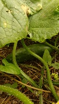
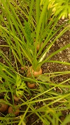

Property
When we first got the house the garden was all concrete covered in small stones. The previous owner assured us that the concrete was not thick at all, so we were eager to start demolition.
After two summers, we have finally been able to open up a majority of the garden. We started with shovels and a wheelie bin, moving stones from one side of the garden to another. As we progressed, we started encountering concrete, quite thin as the owner had said, and bought a pickaxe. It went quite well for a while until we found out the truth: the concrete is up to 15cm thick! A quick trip to buy a jackhammer and back to progressing. This is slow as it is very time consuming and a lot of hard work. Up until now we have removed about 6 cubic meters of stones and concrete and added in the same amount of soil plus 3 cubic meters of woodchips, all by hand!
 Another part of the property we want to manage is this extra bit of land just out the back of our garden. It is a 25 square meter triangle in complete disuse. We are currently trying to acquire the land from the council to save it from being an illegel tipping site.
Another part of the property we want to manage is this extra bit of land just out the back of our garden. It is a 25 square meter triangle in complete disuse. We are currently trying to acquire the land from the council to save it from being an illegel tipping site.
Flowers
 As we open up space in the garden, we also have to fill it up! We want to encourage insect life in our garden (which will also help with the veggies). The solution: flowers!
As we open up space in the garden, we also have to fill it up! We want to encourage insect life in our garden (which will also help with the veggies). The solution: flowers!
We have a healthy mix of wild and store-bought flowers. Wildflowers are brought in either naturally by the wind or through “flower bombs” and wild meadow seeds. As we are starting our garden our policy is “If there is nothing occupying the space, let anything that wants to grow grow, we'll see later.”
 On top of the wildflowers, we have quite a few store-bought flowers. These tend to be more complicated as a lot of them require special care, soil and sun exposure. We do this through trial and error. We research the plants first, but quite often are unlucky with the placement or pest attacks. If something doesn't survive, we don't despair and plant something else in its place, and little by little we fill the garden.
On top of the wildflowers, we have quite a few store-bought flowers. These tend to be more complicated as a lot of them require special care, soil and sun exposure. We do this through trial and error. We research the plants first, but quite often are unlucky with the placement or pest attacks. If something doesn't survive, we don't despair and plant something else in its place, and little by little we fill the garden.
Food
As well as flowers, we also plant a variety of vegetables. We are not trying to be self-sufficient as we lack in knowledge and space. However, anything that can be homegrown rather than store-bought makes us happy. Tomatoes are a staple in our house. They are delicious fresh as well as cooked and can be preserved easily, either drying them out or making them into tomato sauce that freezes very well.
 Cucumbers are a new addition this year. I have always dreamed of making my own pickles but had very little luck with them. We tried courgettes, eggplant and cucumbers this year. The only ones to survive were the cucumbers, in a random spot of the garden on top of that! Only two plants survived but thanks to the decent summer we have had this year we were able to have 10-15 good sized cucumbers. Ate some fresh and pickled the rest!
 Carrot production is very important to us. We own a rabbit, so the leafy part of the carrot is a great treat for him. The root in itself is crucial (in my eyes) to make good tomato and bolognaise sauce. It brings in a natural sweetness that is a delight. The first year we had one carrot survive, second year two. This year, probably to compensate, I planted a heavy dense row of them and of course they all survived. Although great news this did mean that we had a lot of tiny carrots. Not great to cook but an amazing treat for the rabbit.
 The love and bane of my existence, corn. Sweet corn is a great staple for barbeques (don't forget our contest). I have been trying to grow them since year one but with very little to show for. The plants stay very short (1-2 feet tall) and rarely give more than one cob per plant. Pollination is another struggle. Although I have done extensive research and understand how it should work, I am yet to manage a full cob. What we have been able to eat however was delicious!
The love and bane of my existence, corn. Sweet corn is a great staple for barbeques (don't forget our contest). I have been trying to grow them since year one but with very little to show for. The plants stay very short (1-2 feet tall) and rarely give more than one cob per plant. Pollination is another struggle. Although I have done extensive research and understand how it should work, I am yet to manage a full cob. What we have been able to eat however was delicious!